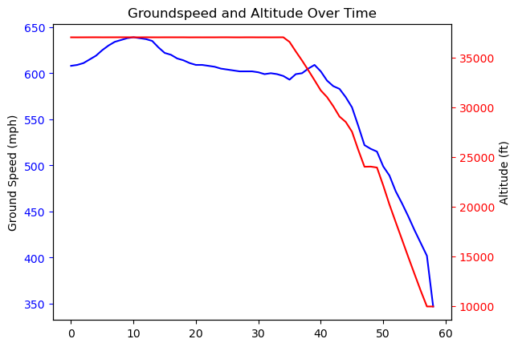

More WiFi without internet on a Southwest flight
After reading James Vaughan’s write-up about what he could do with a connection to the flight’s WiFi without access to the internet, and an upcoming Southwest flight of my own, I’d thought I’d replicate his findings and see what else was lurking around the airlines’ network.
First, the data collection:
while true; do
http getconnected.southwestwifi.com/current.json | jq > current_$(date +%Y%m%d%H%M).json;
sleep 60;
done
I started this maybe 30 minutes into my flight so wasn’t able to get the full duration, but at the end the data checks out!

But what else is lurking around?
My initial attempt to collect data actually didn’t end up as expected. The pilot rebooted the wifi right at the start of our flight and so to debug when it would be working again, I kept trying to curl the IP address of the initial connection point: initial.southwestwifi.com. Curl kept returning an SSL error, so without reading further I figured I’d give httpie a try. This gave me a much more useful response message! Specifically, the server couldn’t validate the known hostnames tied to the SSL cert with my request. It was expecting one of the following:
southwestwifi.com
pa.southwestwifi.com
crm.southwestwifi.com
www.southwestwifi.com
media.southwestwifi.com
stream.southwestwifi.com
initial.southwestwifi.com
opsdata.southwestwifi.com
test-crm.southwestwifi.com
connected.southwestwifi.com
flightdata.southwestwifi.com
getconnected.southwestwifi.com
After a quick nslookup on each of these, we had the following table:
southwestwifi.com 192.168.35.1
pa.southwestwifi.com
crm.southwestwifi.com 208.81.181.206
www.southwestwifi.com 192.168.35.1
media.southwestwifi.com 192.168.35.131
stream.southwestwifi.com 192.168.35.130
initial.southwestwifi.com 192.168.36.1
opsdata.southwestwifi.com
test-crm.southwestwifi.com 208.81.181.205
connected.southwestwifi.com 192.168.34.1
flightdata.southwestwifi.com
getconnected.southwestwifi.com 192.168.35.1
Most of these look to be local to the aircraft itself. But what are those 208 addresses?
nslookup 208.81.181.206\
206.181.81.208.in-addr.arpa name = troy1.dc.nubill.net.
...
Curling that endpoint got me a 403, so I didn’t investigate any further, but it appears to be some proxy given the squid header I received in the response.
At this point I looked back in my browser where I was still logging network
traffic to confirm the repeated requests for current.json when I noticed
another file: log_heartbeat_connectivityalerts.json.
I immediately saved the HAR dump from my browser session and began exploring. Looks like Southwest also POSTS the following data periodically while you’re connected to WiFi during your flight:
{
"params": [
{
"name": "mac_address",
"value": "..."
},
{
"name": "url",
"value": "/"
},
{
"name": "tab",
"value": "540"
},
{
"name": "satcomm_status",
"value": "active"
},
{
"name": "connection_active",
"value": "true"
},
{
"name": "livetv_error",
"value": "na"
},
{
"name": "livetv_coverage",
"value": "yes"
},
{
"name": "show_popup",
"value": "false"
},
{
"name": "show_notification",
"value": "false"
},
{
"name": "html_show_alerts",
"value": "false"
},
{
"name": "html_show_no_coverage",
"value": "na"
}
]
}
This got me wondering what other data could be or was being POSTed back to
Southwest. A quick grep for other endpoints with log_ in them from the HAR
dump:
log_ad_data.json
log_games_event.json
log_heartbeat_connectivityalerts.json
log_javascript_message.json
log_jwplayer_error.json
log_portal_alerts.json
The log_ad_data endpoint was interesting. Specific adId and campaignId values
were in the post requests for this data, so I assume Southwest is doing some
targeted advertising even without purchasing WiFi or signing in given my MAC
address was sent.
I didn’t play any games or open any video players included with the free WiFi, so I’m not surprised by the lack of data for those endpoints. Finally, the remainder of the JSON endpoints:
current.json
dcc_log.json
episode_info.json
episode_meta.json
episodes_for_season.json
series_playlist.json
set_has_player.json
set_media_notification_dismiss.json
sponsored_auth.json
Not the worst way I’ve spent a 4 hour layover. Wonder what else is out there, Southwest!